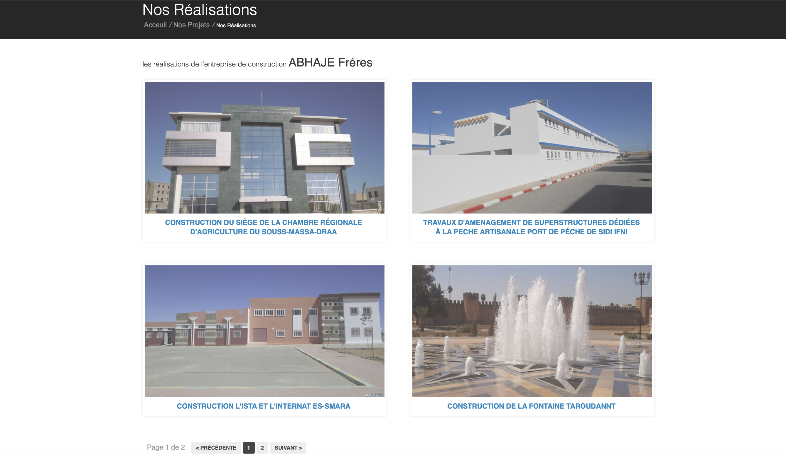

 Bâtiment institutionnelConstruction du Siège de la Chambre Régionale d’Agriculture du Souss-Massa-Draa
Infrastructure portuaireTravaux d’aménagement de superstructures dédiées à la pêche artisanale — Port de Sidi Ifni